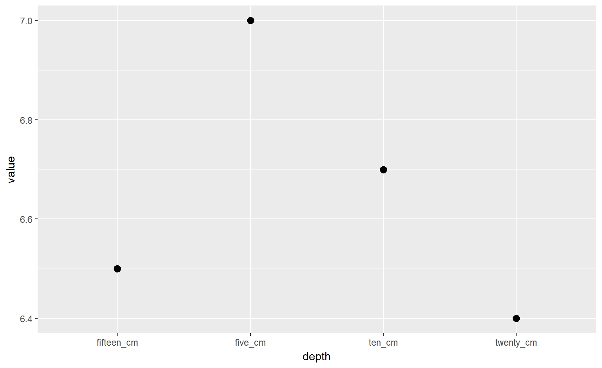
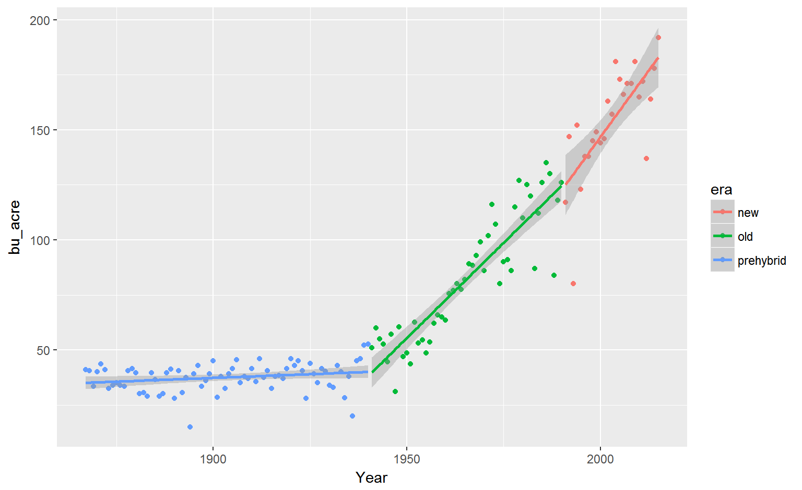
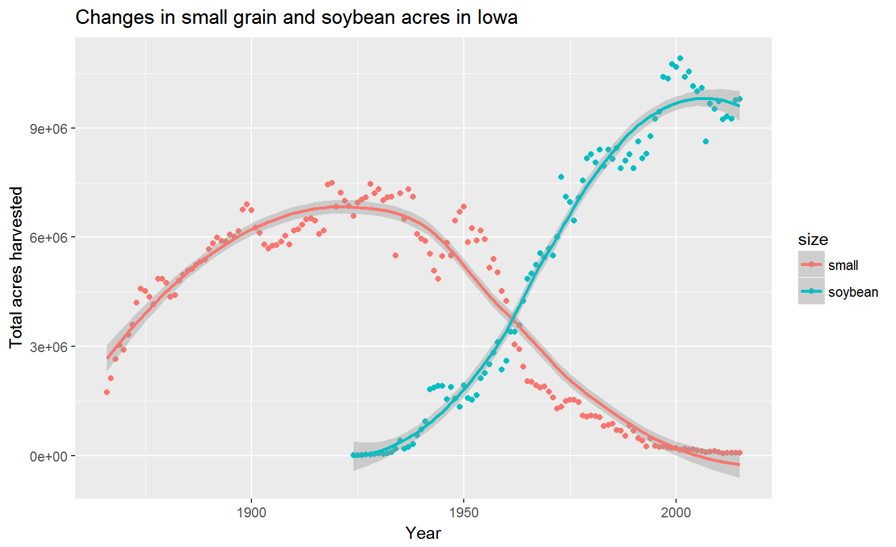

What is it?
Collection of R packages designed to work around a common philosophy.

Ranae Dietzel
Hadley Wickham’s talk from UseR! 2016 Tools for tidy data
If someone is making a “pit of success”, you should probably walk towards it.
Collection of R packages designed to work around a common philosophy.
Collection of R packages designed to work around a common philosophy.


## # A tibble: 5 × 5
## property five_cm ten_cm fifteen_cm twenty_cm
## <chr> <dbl> <dbl> <dbl> <dbl>
## 1 pH 7 6.7 6.5 6.4
## 2 NO3 35 22.0 20.0 18.0
## 3 clay 20 20.0 20.0 20.0
## 4 silt 20 20.0 20.0 20.0
## 5 sand 60 60.0 60.0 60.0Plot the change in pH across depth?
gatherWhen column names are values instead of variables, we need to gather
## # A tibble: 5 × 5
## property five_cm ten_cm fifteen_cm twenty_cm
## <chr> <dbl> <dbl> <dbl> <dbl>
## 1 pH 7 6.7 6.5 6.4
## 2 NO3 35 22.0 20.0 18.0
## 3 clay 20 20.0 20.0 20.0
## 4 silt 20 20.0 20.0 20.0
## 5 sand 60 60.0 60.0 60.0depth. This is the key.gather## # A tibble: 5 × 5
## property five_cm ten_cm fifteen_cm twenty_cm
## <chr> <dbl> <dbl> <dbl> <dbl>
## 1 pH 7 6.7 6.5 6.4
## 2 NO3 35 22.0 20.0 18.0
## 3 clay 20 20.0 20.0 20.0
## 4 silt 20 20.0 20.0 20.0
## 5 sand 60 60.0 60.0 60.0value. If you know what it is, name it (NO3ppm). If you have many mixed units, you can use value = value or value = measured etc.gathertidy_soil<-gather(soil, five_cm, ten_cm, fifteen_cm, twenty_cm,
key=depth, value=value)
tidy_soil## # A tibble: 20 × 3
## property depth value
## <chr> <chr> <dbl>
## 1 pH five_cm 7.0
## 2 NO3 five_cm 35.0
## 3 clay five_cm 20.0
## 4 silt five_cm 20.0
## 5 sand five_cm 60.0
## 6 pH ten_cm 6.7
## 7 NO3 ten_cm 22.0
## 8 clay ten_cm 20.0
## 9 silt ten_cm 20.0
## 10 sand ten_cm 60.0
## 11 pH fifteen_cm 6.5
## 12 NO3 fifteen_cm 20.0
## 13 clay fifteen_cm 20.0
## 14 silt fifteen_cm 20.0
## 15 sand fifteen_cm 60.0
## 16 pH twenty_cm 6.4
## 17 NO3 twenty_cm 18.0
## 18 clay twenty_cm 20.0
## 19 silt twenty_cm 20.0
## 20 sand twenty_cm 60.0filter(tidy_soil, property == "pH")%>%
ggplot(aes(x=factor(depth, levels = c("five_cm", "ten_cm", "fifteen_cm", "twenty_cm")), y=value))+
geom_point(size=3)+
labs(x="depth", y="pH")
spreadUse this if one of your columns is full of what could be headers
## # A tibble: 6 × 4
## Year Commodity `Data Item` Value
## <int> <chr> <chr> <dbl>
## 1 2015 OATS OATS - ACRES HARVESTED 57000
## 2 2015 OATS OATS - ACRES PLANTED 125000
## 3 2015 OATS OATS - PRODUCTION, MEASURED IN $ 11027000
## 4 2015 OATS OATS - PRODUCTION, MEASURED IN BU 4161000
## 5 2015 OATS OATS - YIELD, MEASURED IN BU / ACRE 73
## 6 2014 OATS OATS - ACRES HARVESTED 55000key, here it is Data Item.value column, here they already have it as Valuespread(oats, key = `Data Item`, value = Value)## # A tibble: 150 × 8
## Year Commodity `OATS - ACRES HARVESTED` `OATS - ACRES PLANTED`
## * <int> <chr> <dbl> <dbl>
## 1 1866 OATS 450000 NA
## 2 1867 OATS 500000 NA
## 3 1868 OATS 560000 NA
## 4 1869 OATS 610000 NA
## 5 1870 OATS 660000 NA
## 6 1871 OATS 750000 NA
## 7 1872 OATS 850000 NA
## 8 1873 OATS 910000 NA
## 9 1874 OATS 960000 NA
## 10 1875 OATS 1075000 NA
## # ... with 140 more rows, and 4 more variables: `OATS - PRODUCTION,
## # MEASURED IN $` <dbl>, `OATS - PRODUCTION, MEASURED IN BU` <dbl>, `OATS
## # - YIELD, MEASURED IN BU / ACRE` <dbl>, `OATS - YIELD, MEASURED IN BU /
## # NET PLANTED ACRE` <dbl>%>% moves or “pipes” the result forward into the next functionf(x) is the same as x %>% f()
*assumes the first input/argument the function wants is the data set
ggplot(df, aes(x = this, y = values))
vs
df %>% ggplot(aes(x = this, y = values))
Regular code chunks work from inside out
finally_last_step(
and_then_third(
then_second(
do_first(data)
)
)
)Piping uses intuitive ordering
data%>%
do_first()%>%
then_second()%>%
and_then_third()%>%
finally_last_step() ## # A tibble: 4 × 7
## trt block part may june july august
## <chr> <chr> <chr> <dbl> <dbl> <dbl> <dbl>
## 1 0 A leaf 5.5 7.5 12.5 12.5
## 2 100 A stem 5.7 6.7 7.7 7.7
## 3 130 A fruit 0.0 2.0 8.2 8.8
## 4 150 A root 12.0 14.0 22.5 22.0Which columns need to be incorporated?
What is the key?
What is the value?
gather(biomass, may, june, july, august, key = month, value = g_m2)## # A tibble: 16 × 5
## trt block part month g_m2
## <chr> <chr> <chr> <chr> <dbl>
## 1 0 A leaf may 5.5
## 2 100 A stem may 5.7
## 3 130 A fruit may 0.0
## 4 150 A root may 12.0
## 5 0 A leaf june 7.5
## 6 100 A stem june 6.7
## 7 130 A fruit june 2.0
## 8 150 A root june 14.0
## 9 0 A leaf july 12.5
## 10 100 A stem july 7.7
## 11 130 A fruit july 8.2
## 12 150 A root july 22.5
## 13 0 A leaf august 12.5
## 14 100 A stem august 7.7
## 15 130 A fruit august 8.8
## 16 150 A root august 22.0gather(biomass, may, june, july, august, key = month, value = g_m2)%>%
group_by(part, month)%>%
summarise(avg = mean(g_m2))## Source: local data frame [16 x 3]
## Groups: part [?]
##
## part month avg
## <chr> <chr> <dbl>
## 1 fruit august 8.8
## 2 fruit july 8.2
## 3 fruit june 2.0
## 4 fruit may 0.0
## 5 leaf august 12.5
## 6 leaf july 12.5
## 7 leaf june 7.5
## 8 leaf may 5.5
## 9 root august 22.0
## 10 root july 22.5
## 11 root june 14.0
## 12 root may 12.0
## 13 stem august 7.7
## 14 stem july 7.7
## 15 stem june 6.7
## 16 stem may 5.7The next two examples have non-tidyverse equivalents here.
These examples come from a nice ag dataset available from the National Agricultural Statitistics Service. I’ve selected data that focuses on field crops in Iowa.
## # A tibble: 6 × 21
## Program Year Period `Week Ending` `Geo Level` State `State ANSI`
## <chr> <int> <chr> <chr> <chr> <chr> <int>
## 1 SURVEY 2015 YEAR <NA> STATE IOWA 19
## 2 SURVEY 2015 YEAR <NA> STATE IOWA 19
## 3 SURVEY 2015 YEAR <NA> STATE IOWA 19
## 4 SURVEY 2015 YEAR <NA> STATE IOWA 19
## 5 SURVEY 2015 YEAR <NA> STATE IOWA 19
## 6 SURVEY 2015 YEAR <NA> STATE IOWA 19
## # ... with 14 more variables: `Ag District` <chr>, `Ag District
## # Code` <chr>, County <chr>, `County ANSI` <chr>, `Zip Code` <chr>,
## # Region <chr>, watershed_code <chr>, Watershed <chr>, Commodity <chr>,
## # `Data Item` <chr>, Domain <chr>, `Domain Category` <chr>, Value <dbl>,
## # `CV (%)` <chr>We read this dataframe in above as “crops”
crops%>%
select(Year, State, Commodity, `Data Item`, Value)%>%
rename(Data = `Data Item`, bu_acre = Value)%>%
filter(Year > 1866,
Data == "CORN, GRAIN - YIELD, MEASURED IN BU / ACRE")%>%
mutate(era = ifelse ((Year %in% c(1867:1940)), "prehybrid",
ifelse((Year %in% c(1941:1990)), "old",
ifelse ((Year %in% c(1991:2015)),
"new", "nope"))))%>%
ggplot(aes(x=Year, y=bu_acre, group=era, color=era))+
geom_point()+
geom_smooth(method=lm)
crops%>%
select(Year, State, Commodity, `Data Item`, Value)%>%
filter(Commodity %in% c("OATS", "BARLEY", "WHEAT", "RYE", "SOYBEANS") &
`Data Item` %in% c("OATS - ACRES HARVESTED",
"BARLEY - ACRES HARVESTED",
"WHEAT - ACRES HARVESTED",
"RYE - ACRES HARVESTED",
"SOYBEANS - ACRES HARVESTED"))%>%
mutate(size = ifelse ((Commodity %in% c("OATS", "BARLEY", "WHEAT", "RYE")),
"small","soybean"))%>%
group_by(size, Year)%>%
summarise(total=sum(Value))%>%
ggplot(aes(x=Year, y=total, group=size, color=size))+
geom_point()+
geom_smooth()+
ggtitle("Changes in small grain and soybean acres in Iowa")+
labs(y="Total acres harvested")